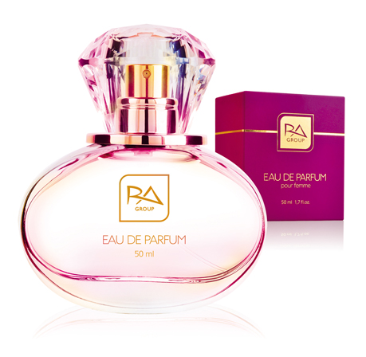

Элитная коллекция духов VP
Ароматы для женщин
Ароматы для мужчин
Ароматы с феромонами
Элитная коллекция VEDO
Декоративная косметика
|
|

|
Аромат для мистической незнакомки.
Интригующая нота бергамота создает хорошую базу для «сердечных» нот:
королевской лилии и иланг-иланга. Финальный акцент из ванили,
амбры и сандала позволяет почувствовать себя загадочной и желанной!
Характеристика: нежный, уверенный.
Семейство ароматов: цветочные.
Начальная нота: бергамот.
Нота «сердца»: апельсиновый цвет, иланг-иланг, лилия.
Конечная нота: амбра, ваниль с Таити, сандаловое дерево.
|